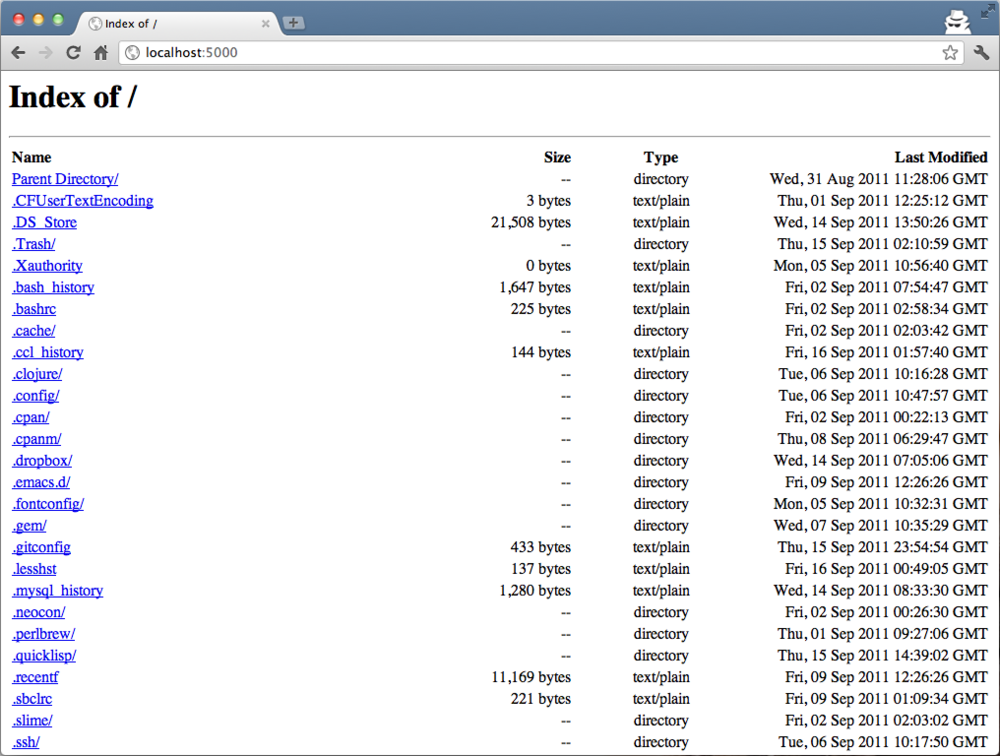

Clack.App.Directory is a real example of a Clack application that uses <component>. This application returns directory information as an HTML page.
Using this application is pretty easy:
;; mount /Users/nitro_idiot/ to http://localhost:5000/
(clack:clackup
(make-instance 'clack.app.directory:<clack-app-directory>
:root #p"/path/to/your/home")
:port 5000)
Open your web browser and go to http://localhost:5000/. You will see a list of files in your home directory.
Can you see why this application has implemented not just as a function but by using <component>? When you create the instance, you can set :root, which changes the behavior of the application. It is difficult to achieve this functionality by using functions.
I know functions that return a closure can do similar thing. But that would be complicated. There is also another advantage of using classes: inheritance. To tell the truth, <clack-app-directory> doesn't inherit <component> directly. It inehrits <clack-app-file> which returns a file (not directory information). What <clack-app-directory> per se has implemented is only the feature to returning a list of files in a directory.
If you are curious about these stuffs, please take a look at directory.lisp and file.lisp in the core/apps/directory. These will tell you how components are used in details.